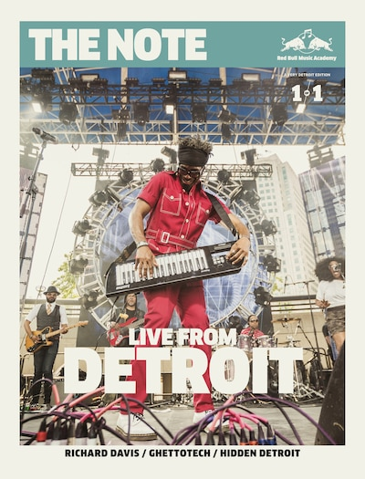
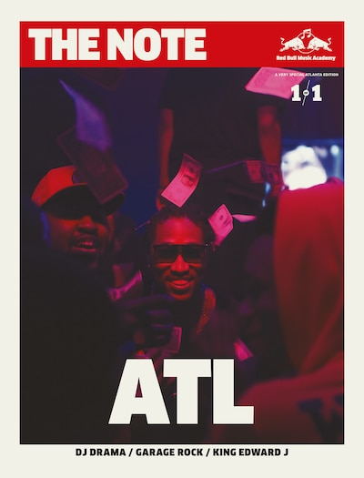
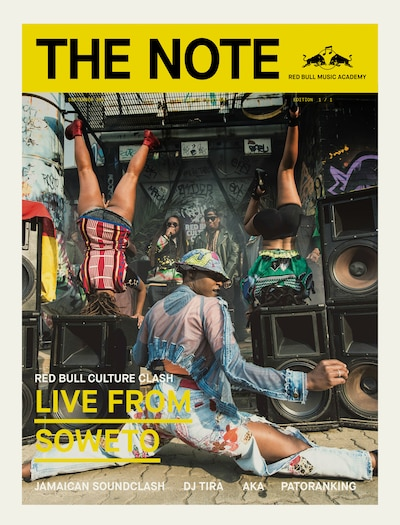
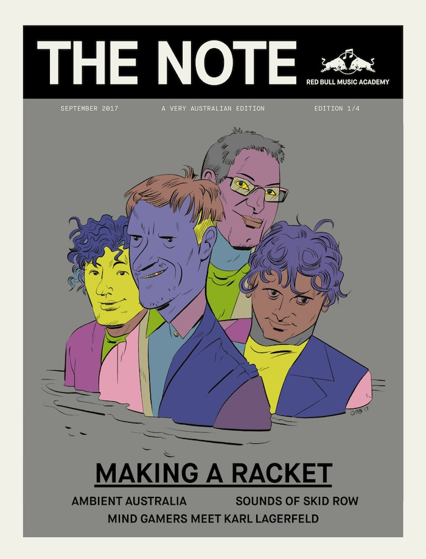
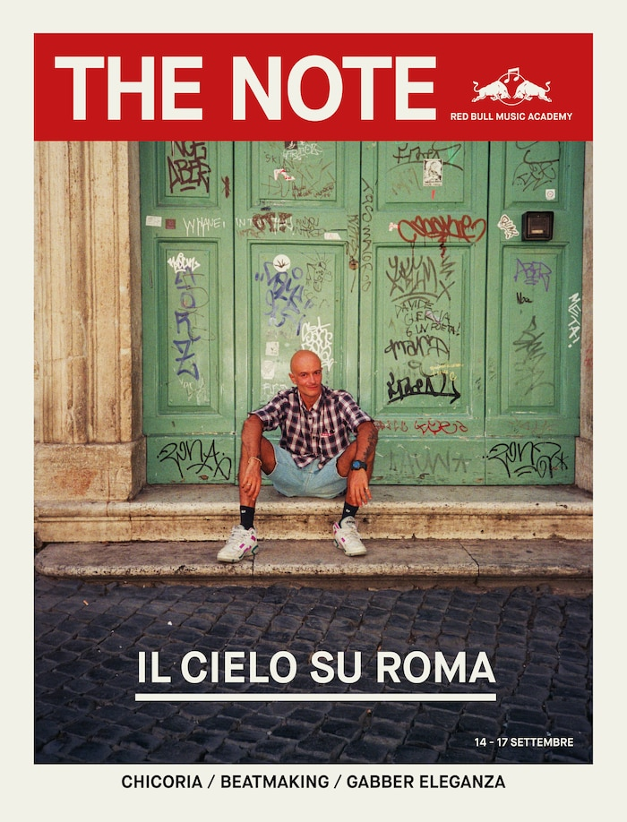
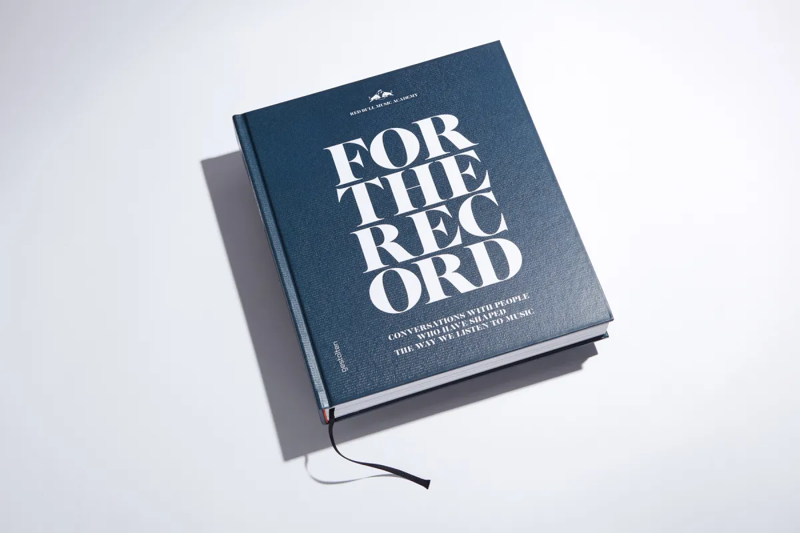
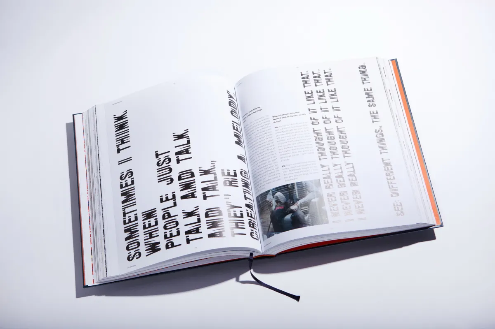
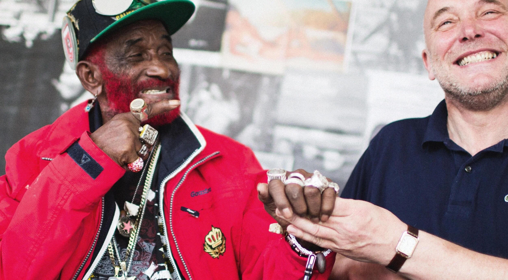

At Red Bull Music Academy, I worked on various editions of The (Daily) Note, a print newspaper created to support local activations in various cities and countries.
The newspaper covered local music scenes with the depth and seriousness they deserved, bringing longform journalism, photography, and illustration together in a physical format that felt immediate and vital.
Each edition was tailored to its host city, with local writers and photographers contributing alongside the RBMA editorial team. The result was a series of one-off publications that captured musical moments in Detroit, Atlanta, Chile, Russia, Australia, South Africa, and Brazil.



As part of RBMA's 15th anniversary, I co-edited the book For The Record: Conversations with People Who Have Shaped the Way We Listen to Music, which paired up musicians we thought might have something interesting to say to one another.
The concept was simple but produced extraordinary results: put two artists who admire each other's work into a room and let them talk. No interviewer, no agenda. What emerged were conversations that revealed the creative process in ways that traditional interviews rarely achieve.